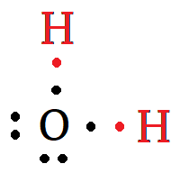
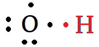
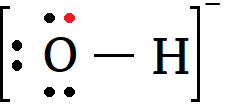

Covalent Bonds
Covalent bonding means that atoms join together by sharing electrons.
- Atoms prefer to have their valence levels filled.
- Oxygen has 6 valence electrons and needs 2 more to fill it.
- Hydrogen has 1 valence electron and needs 1 more to fill it.
- A water molecule is formed when two hydrogen atoms form covalent bonds with an oxygen atom.

Polyatomic Ions
What if an oxygen atom formed a bond with a single hydrogen atom...

The oxygen is still one electron short of a full valence...
- It will try to acquire an extra electron.

- This is called a polyatomic ion.
- Two or more atoms are bonded covalently.
- The bonded atoms share a net charge.
- A polyatomic ion will attract to ions of the opposite charge.

Naming Polyatomic Ionic Compounds
Your periodic table includes a list of common polyatomic ions, giving their names, symbols, and charges.
- As with binary ionic compounds, the name is just the cation name follwed by the anion name.
- Polyatomic anions often have -ite or -ate as suffixes.
- The total cation charge and the total anion charge must balance.
| Cation | Anion | |
|---|---|---|
| Name | ammonium | sulphate |
| Symbol | \(\mathrm{NH_4^{+}}\) | \(\mathrm{SO_4^{2-}}\) |
| Ion Charge | 1+ | 2– |
| Proportions | 2 | 1 |
| Total Charge | 2+ | 2– |
- The formula for ammonium sulphate is (NH4)2SO4.
- Use parenthesis around the polyatomic ion if it requires a subscript.
Solubility
Ionic compounds often (but not always) dissolve in water to form a solution.
- Use the solubility table in your data book to determine if an ionic compound has high or low solubility.
- Identify the cation and anion.
- Locate the ions in the solubility table.
Is ammonium sulphate soluble in water?